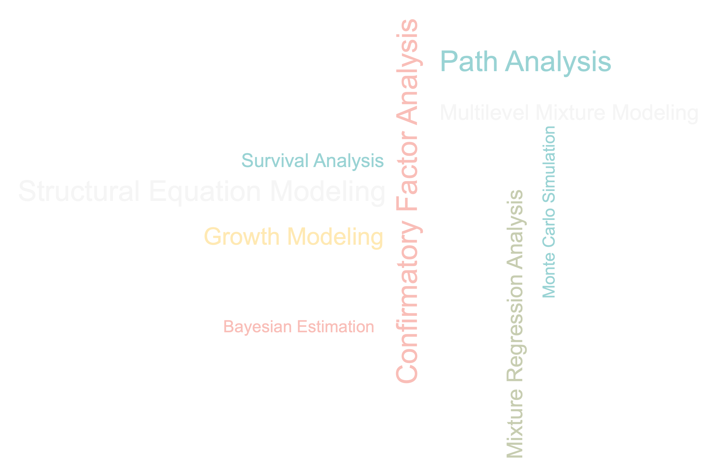

class: left, middle, title-slide # Introducing <code><font color='#FEBC11'>Lavaan</font></code> for Latent Variable Analysis in R<br>  ### <br><br>Jingyi Xiao ### <span style="font-size: 75%">GeoTrans Lab, Department of Geography üåê <br>UC Santa Barbara</span> ### November 18, 2021 --- class: middle ### Motivations Human travel behavior üöó üöå üöã üõπ üö≤ üõ¥ ‚õ¥ ‚úàÔ∏è -- Latent variable analysis üìñ -- Mplus üí∞ üò≠ -- `Lavaan` üÜì + üë©‚Äçüíª + üßπ = ü§ó --- class: middle ### Outline .sea_green[ - Introduction - Examples - Confirmatory Factor Analysis - Path Analysis - Structural Equation Modeling - Linear Growth Model - Resources - Summary ] --- class: middle ### `Lavaan` üòÆ - R pacakge `Lavaan` (**LA**tent **VA**riable **AN**alysis) <a name=cite-rosseel2012lavaan></a>([Rosseel, 2012](#bib-rosseel2012lavaan)) -- - .gold[Free and open-source] - .dark_coral[Easy and intuitive to use] - .navy[Reliable and advanced with commercial-quality] - .sea_green[Extensible] - .purple[Constantly upgrading] --- class: middle ### To Begin With ```r install.packages("lavaan", dependencies=TRUE) # (R version 4.0.0 or higher) ``` -- ```r library(lavaan) ``` --- ### `Lavaan` Syntax üìì Formula type | Operator | Example | Description | Diagram :----------- | :-------: | :------| :----------| :------: .aqua[regression] | `~` | `y ~ x`|.aqua[y is .aqua[regressed] on x ]| <img src="img/regression.png" height="50px"/> .moss[latent variable definition] | `=~` | `f =~ y1 + y2 + y3` | .moss[f is .moss[measured] by y1, y2, y3] | <img src="img/latent_var.png" height="120px"/> .sea_green[(co)variance] |`~~` | `y1 ~~ y1` <br> `y2 ~~ y3` |.sea_green[Variance of y1 <br> Covariance between y2 and y3] | <img src="img/co_var.png" height="120px"/> .dark_coral[intercept] | `~1` | `y1 ~ 1` | .dark_coral[The intercept (mean) of y1] | <img src="img/intercept.png" height="50px"/> --- ### `Lavaan` Syntax üìì (Cont') Formula type | Operator | Example | Description | Diagram :----------- | :-------: | :------| :----------| :----: fixed parameter | `*`| `1*y1` | Fix the parameter (factor loading) of y1 to 1 | <img src="img/fix_para.png" height="50px"/> free parameter | `NA*` |`NA*y1`| The parameter (factor loading) of y1 is freely estimated | <img src="img/free_para.png" height="50px"/> --- class: inverse, center, middle ## Example 1: Confirmatory Factor Analysis (CFA) --- ### A Two-Factor CFA Model .pull-left[ ``` ## # A tibble: 500 × 6 ## y1 y2 y3 y4 y5 y6 ## <dbl> <dbl> <dbl> <dbl> <dbl> <dbl> ## 1 -0.535 0.0996 -0.887 -1.24 -3.49 1.44 ## 2 0.522 0.959 2.62 2.67 0.438 0.794 ## 3 1.58 2.48 3.08 0.908 2.22 -0.0673 ## 4 -0.458 0.885 0.250 -1.08 -1.36 -0.910 ## 5 0.276 -0.840 -2.08 -0.441 -2.67 -1.24 ## # ‚Ķ with 495 more rows ``` <br /> - Six .dark_coral[continuous] indicators `y1-y6` - Two factors `f1` & `f2` - `f1` is .moss[measured] by `y1`, `y2`, and `y3` - `f2` is .moss[measured] by `y4`, `y5`, and `y6` - `f1` is .sea_green[correlated] with `f2` ] -- .pull-right[ <img src="img/example1.png" width="50%" style="display: block; margin: auto;" /> ] -- .footnote[*Data and model from [Example 5.1](http://www.statmodel.com/HTML_UG/chapter5V8.htm) in .navy[_Mplus user‚Äôs guide_] <a name=cite-muthen20121998></a>([Muth√©n and Muth√©n, 2012](#bib-muthen20121998)).] --- ### R Code .left-column[ <br> <br> <br> <img src="img/example1.png" width="100%" style="display: block; margin: auto auto auto 0;" /> ] .right-column[ ```r # specify the model cfa.model <- '# a two-factor CFA with continuous factor indicators # define the latent variables (factors) f1 =~ y1 + y2 + y3 f2 =~ y4 + y5 + y6 # covariance (Optional; included by default) f1 ~~ f2 # intercepts y1 ~ 1 y2 ~ 1 y3 ~ 1 y4 ~ 1 y5 ~ 1 y6 ~ 1 ' # fit the model cfa.fit <- cfa(cfa.model, data=cfa.df) ``` ] --- ### Results and Comparison .pull-left[ **.gold[.large[*Lavaan* results]]** ```r summary(cfa.fit, * fit.measures=TRUE) # print fit indices ``` .scriptsize[.scroll-box-20[ ``` ## lavaan 0.6-9 ended normally after 34 iterations ## ## Estimator ML ## Optimization method NLMINB ## Number of model parameters 19 ## ## Number of observations 500 ## ## Model Test User Model: ## ## Test statistic 3.896 ## Degrees of freedom 8 ## P-value (Chi-square) 0.866 ## ## Model Test Baseline Model: ## ## Test statistic 596.921 ## Degrees of freedom 15 ## P-value 0.000 ## ## User Model versus Baseline Model: ## ## Comparative Fit Index (CFI) 1.000 ## Tucker-Lewis Index (TLI) 1.013 ## ## Loglikelihood and Information Criteria: ## ## Loglikelihood user model (H0) -4906.609 ## Loglikelihood unrestricted model (H1) -4904.661 ## ## Akaike (AIC) 9851.218 ## Bayesian (BIC) 9931.295 ## Sample-size adjusted Bayesian (BIC) 9870.988 ## ## Root Mean Square Error of Approximation: ## ## RMSEA 0.000 ## 90 Percent confidence interval - lower 0.000 ## 90 Percent confidence interval - upper 0.027 ## P-value RMSEA <= 0.05 0.995 ## ## Standardized Root Mean Square Residual: ## ## SRMR 0.014 ## ## Parameter Estimates: ## ## Standard errors Standard ## Information Expected ## Information saturated (h1) model Structured ## ## Latent Variables: ## Estimate Std.Err z-value P(>|z|) ## f1 =~ ## y1 1.000 ## y2 1.127 0.099 11.378 0.000 ## y3 1.020 0.089 11.474 0.000 ## f2 =~ ## y4 1.000 ## y5 1.058 0.129 8.226 0.000 ## y6 0.897 0.105 8.524 0.000 ## ## Covariances: ## Estimate Std.Err z-value P(>|z|) ## f1 ~~ ## f2 -0.030 0.052 -0.583 0.560 ## ## Intercepts: ## Estimate Std.Err z-value P(>|z|) ## .y1 -0.022 0.063 -0.354 0.723 ## .y2 0.026 0.062 0.410 0.682 ## .y3 0.035 0.062 0.555 0.579 ## .y4 -0.022 0.064 -0.350 0.726 ## .y5 -0.016 0.058 -0.271 0.786 ## .y6 0.048 0.058 0.824 0.410 ## f1 0.000 ## f2 0.000 ## ## Variances: ## Estimate Std.Err z-value P(>|z|) ## .y1 1.064 0.096 11.124 0.000 ## .y2 0.798 0.100 7.981 0.000 ## .y3 1.010 0.095 10.600 0.000 ## .y4 1.290 0.119 10.880 0.000 ## .y5 0.854 0.110 7.736 0.000 ## .y6 1.066 0.097 11.035 0.000 ## f1 0.907 0.125 7.254 0.000 ## f2 0.761 0.133 5.740 0.000 ``` ] ] ] -- .pull-right[ **.gold[.large[*Mplus* results]]** <br> <br> <br> <br> .scriptsize[.scroll-box-20[ ``` ## SUMMARY OF ANALYSIS ## ## Number of groups 1 ## Number of observations 500 ## ## Number of dependent variables 6 ## Number of independent variables 0 ## Number of continuous latent variables 2 ## ## Observed dependent variables ## ## Continuous ## Y1 Y2 Y3 Y4 Y5 Y6 ## ## Continuous latent variables ## F1 F2 ## ## ## Estimator ML ## Information matrix OBSERVED ## Maximum number of iterations 1000 ## Convergence criterion 0.500D-04 ## Maximum number of steepest descent iterations 20 ## THE MODEL ESTIMATION TERMINATED NORMALLY ## ## ## ## MODEL FIT INFORMATION ## ## Number of Free Parameters 19 ## ## Loglikelihood ## ## H0 Value -4906.609 ## H1 Value -4904.661 ## ## Information Criteria ## ## Akaike (AIC) 9851.218 ## Bayesian (BIC) 9931.295 ## Sample-Size Adjusted BIC 9870.988 ## (n* = (n + 2) / 24) ## ## Chi-Square Test of Model Fit ## ## Value 3.896 ## Degrees of Freedom 8 ## P-Value 0.8664 ## ## RMSEA (Root Mean Square Error Of Approximation) ## ## Estimate 0.000 ## 90 Percent C.I. 0.000 0.027 ## Probability RMSEA <= .05 0.995 ## ## CFI/TLI ## ## CFI 1.000 ## TLI 1.013 ## ## Chi-Square Test of Model Fit for the Baseline Model ## ## Value 596.921 ## Degrees of Freedom 15 ## P-Value 0.0000 ## ## SRMR (Standardized Root Mean Square Residual) ## ## Value 0.014 ## ## ## ## MODEL RESULTS ## ## Two-Tailed ## Estimate S.E. Est./S.E. P-Value ## ## F1 BY ## Y1 1.000 0.000 999.000 999.000 ## Y2 1.126 0.099 11.368 0.000 ## Y3 1.019 0.089 11.482 0.000 ## ## F2 BY ## Y4 1.000 0.000 999.000 999.000 ## Y5 1.059 0.129 8.199 0.000 ## Y6 0.897 0.105 8.531 0.000 ## ## F2 WITH ## F1 -0.030 0.052 -0.582 0.560 ## ## Intercepts ## Y1 -0.022 0.063 -0.354 0.723 ## Y2 0.026 0.062 0.410 0.682 ## Y3 0.035 0.062 0.555 0.579 ## Y4 -0.022 0.064 -0.350 0.726 ## Y5 -0.016 0.058 -0.271 0.786 ## Y6 0.048 0.058 0.824 0.410 ## ## Variances ## F1 0.907 0.125 7.254 0.000 ## F2 0.760 0.133 5.734 0.000 ## ## Residual Variances ## Y1 1.064 0.096 11.120 0.000 ## Y2 0.798 0.100 7.972 0.000 ## Y3 1.010 0.095 10.597 0.000 ## Y4 1.290 0.119 10.871 0.000 ## Y5 0.854 0.111 7.710 0.000 ## Y6 1.066 0.097 11.024 0.000 ``` ] ] ] --- ### üíö Tip: Intercepts (Mean Structures) .pull-left[ **.large[.gold[Method *1*]]** .navy[Add intercepts] .coral[.bold[explicitly]] .navy[in model specification] ```r # specify the model cfa.model <- '# factors f1 =~ y1 + y2 + y3 f2 =~ y4 + y5 + y6 * # intercepts * y1 ~ 1 * y2 ~ 1 * y3 ~ 1 * y4 ~ 1 * y5 ~ 1 * y6 ~ 1 ' # fit the model cfa.fit <- cfa(cfa.model, data=cfa.df) ``` ] -- .pull-right[ **.large[.gold[Method *2*]]** .navy[Add intercepts] .coral[.bold[implicitly]]* .navy[in fitting function] ```r # specify the model cfa.model <- '# factors f1 =~ y1 + y2 + y3 f2 =~ y4 + y5 + y6 ' # fit the model cfa.fit <- cfa(cfa.model, data=cfa.df, * # include intercepts * meanstructure=TRUE) ``` .footnote[ *The default intercept is 1. Use explicit method if you want something like `y1 ~ 0.5`. ] ] --- ### Parameter Constraints - Model Identification .pull-left[ **.large[.gold[Method *1*]]** (Default) .navy[Fix the] .coral[factor loading] .navy[of the] .aqua[.bold[first indicator ]] .navy[to 1] .footnotesize[ ```r # specify the model cfa.model.1 <- ' # factors * f1 =~ y1 + y2 + y3 * f2 =~ y4 + y5 + y6 ' # # # # fit the model cfa.fit.1 <- cfa(cfa.model.1, data=cfa.df) parameterEstimates(cfa.fit.1)[c(1:6,13:14),] ``` ``` ## lhs op rhs est se z pvalue ci.lower ci.upper *## 1 f1 =~ y1 1.000 0.000 NA NA 1.000 1.000 ## 2 f1 =~ y2 1.127 0.099 11.378 0 0.933 1.321 ## 3 f1 =~ y3 1.020 0.089 11.474 0 0.845 1.194 *## 4 f2 =~ y4 1.000 0.000 NA NA 1.000 1.000 ## 5 f2 =~ y5 1.058 0.129 8.226 0 0.806 1.311 ## 6 f2 =~ y6 0.897 0.105 8.524 0 0.691 1.103 *## 13 f1 ~~ f1 0.907 0.125 7.254 0 0.662 1.152 *## 14 f2 ~~ f2 0.761 0.133 5.740 0 0.501 1.020 ``` ] ] -- .pull-right[ **.large[.gold[Method *2*]]** .navy[Fix the] .coral[variance] .navy[ of the] .aqua[factor] .navy[to 1] .footnotesize[ ```r # specify the model cfa.model.2 <- ' # factors * f1 =~ NA*y1 + y2 + y3 * f2 =~ NA*y4 + y5 + y6 # factor variances set to 1 * f1 ~~ 1*f1 * f2 ~~ 1*f2 ' # fit the model cfa.fit.2 <- cfa(cfa.model.2, data=cfa.df) parameterEstimates(cfa.fit.2)[1:8,] ``` ``` ## lhs op rhs est se z pvalue ci.lower ci.upper *## 1 f1 =~ y1 0.952 0.066 14.508 0 0.824 1.081 ## 2 f1 =~ y2 1.073 0.066 16.244 0 0.944 1.202 ## 3 f1 =~ y3 0.971 0.065 14.832 0 0.843 1.099 *## 4 f2 =~ y4 0.872 0.076 11.481 0 0.723 1.021 ## 5 f2 =~ y5 0.923 0.073 12.700 0 0.781 1.065 ## 6 f2 =~ y6 0.782 0.069 11.411 0 0.648 0.917 *## 7 f1 ~~ f1 1.000 0.000 NA NA 1.000 1.000 *## 8 f2 ~~ f2 1.000 0.000 NA NA 1.000 1.000 ``` ] ] -- .footnote[**.gold[Method *3*]** use `cfa.fit.1 <- cfa(cfa.model.1, data=cfa.df, **std.lv=TRUE**)` when fitting the model.] --- ### Standardized Solution - 1 **.large[.gold[Method *1*]]** Use the .coral[argument `standardized=TRUE`] in the functions .pull-left[ .small[ ```r cfa.res.1 <- parameterEstimates(cfa.fit.1, * standardized=TRUE) cfa.res.1[c(1:6,13:14), c(1:6, 10:11)] ``` ``` ## lhs op rhs est se z std.lv std.all ## 1 f1 =~ y1 1.000 0.000 NA 0.952 0.678 ## 2 f1 =~ y2 1.127 0.099 11.378 1.073 0.769 ## 3 f1 =~ y3 1.020 0.089 11.474 0.971 0.695 ## 4 f2 =~ y4 1.000 0.000 NA 0.872 0.609 ## 5 f2 =~ y5 1.058 0.129 8.226 0.923 0.707 ## 6 f2 =~ y6 0.897 0.105 8.524 0.782 0.604 ## 13 f1 ~~ f1 0.907 0.125 7.254 1.000 1.000 ## 14 f2 ~~ f2 0.761 0.133 5.740 1.000 1.000 ``` ] ] .pull-right[ .small[ ```r cfa.res.2 <- parameterEstimates(cfa.fit.2, * standardized=TRUE) cfa.res.2[1:8, c(1:6, 10:11)] ``` ``` ## lhs op rhs est se z std.lv std.all ## 1 f1 =~ y1 0.952 0.066 14.508 0.952 0.678 ## 2 f1 =~ y2 1.073 0.066 16.244 1.073 0.769 ## 3 f1 =~ y3 0.971 0.065 14.832 0.971 0.695 ## 4 f2 =~ y4 0.872 0.076 11.481 0.872 0.609 ## 5 f2 =~ y5 0.923 0.073 12.700 0.923 0.707 ## 6 f2 =~ y6 0.782 0.069 11.411 0.782 0.604 ## 7 f1 ~~ f1 1.000 0.000 NA 1.000 1.000 ## 8 f2 ~~ f2 1.000 0.000 NA 1.000 1.000 ``` ] ] -- .footnote[`standardized=TRUE` shows `std.lv` and `std.all` parameter estimates (corresponds to `STD` and `STDYX` in *Mplus*, respectively).] --- ### Standardized Solution - 2 **.large[.gold[Method *2*]]** Call the .coral[function `standardizedSolution()`] directly .pull-left[ .small[ ```r *cfa.res.3 <- standardizedSolution(cfa.fit.1) cfa.res.3[c(1:6,13:14),-c(8:9)] ``` ``` ## lhs op rhs est.std se z pvalue ## 1 f1 =~ y1 0.678 0.035 19.348 0 ## 2 f1 =~ y2 0.769 0.034 22.524 0 ## 3 f1 =~ y3 0.695 0.035 19.953 0 ## 4 f2 =~ y4 0.609 0.044 13.699 0 ## 5 f2 =~ y5 0.707 0.046 15.433 0 ## 6 f2 =~ y6 0.604 0.044 13.596 0 ## 13 f1 ~~ f1 1.000 0.000 NA NA ## 14 f2 ~~ f2 1.000 0.000 NA NA ``` ] ] .pull-right[ .small[ ```r *cfa.res.4 <- standardizedSolution(cfa.fit.2) cfa.res.4[c(1:8),-c(8:9)] ``` ``` ## lhs op rhs est.std se z pvalue ## 1 f1 =~ y1 0.678 0.035 19.348 0 ## 2 f1 =~ y2 0.769 0.034 22.524 0 ## 3 f1 =~ y3 0.695 0.035 19.953 0 ## 4 f2 =~ y4 0.609 0.044 13.699 0 ## 5 f2 =~ y5 0.707 0.046 15.433 0 ## 6 f2 =~ y6 0.604 0.044 13.596 0 ## 7 f1 ~~ f1 1.000 0.000 NA NA ## 8 f2 ~~ f2 1.000 0.000 NA NA ``` ] ] .footnote[`standardizedSolution()` only shows the .coral[standardized] parameter estimates regardless of model specification and parameter constraints.] --- class: middle ### Commonly Used Functions üß∞ - `summary()` .light_mist[outputs an overview of the fitted model] - `parameterEstimates()` .light_mist[returns estimated model parameters] - `standardizedSolution()` .light_mist[returns standardized parameter estimates] - `fitted()` and `fitted.values()` .light_mist[ return the model-implied covariance matrix (and mean vector)] - `resid()` and `residuals()` .light_mist[returns (unstandardized) residuals] - `vcov()` .light_mist[returns the estimated covariance matrix of the parameter estimates] - `AIC()` and `BIC()` .light_mist[return the AIC and BIC values] - `fitMeasures()` .light_mist[returns various fit measures such as CFI/TLI] --- class: inverse, center, middle ## Example 2: Path Analysis --- ### A Path Model .pull-left[ ``` ## # A tibble: 500 × 6 ## u1 u2 u3 x1 x2 x3 ## <ord> <ord> <ord> <dbl> <dbl> <dbl> ## 1 1 0 2 0.573 -0.175 -1.34 ## 2 1 1 2 -0.577 0.425 0.180 ## 3 0 0 0 -0.694 -0.767 0.455 ## 4 0 0 0 -0.818 -1.56 0.580 ## 5 2 0 0 0.464 -0.898 -0.0535 ## # ‚Ķ with 495 more rows ``` <br> - Three .dark_coral[binary/ordinal] dependent variables `u1-u3` - Three .dark_coral[continuous] covariates `x1-x3` - `u1` is .aqua[regressed] on `x1`, `x2`, and `x3` - `u2` is .aqua[regressed] on `x1`, `x2`, and `x3` - `u3` is .aqua[regressed] on the mediating variables `u1` and `u2` and the covariate `x2` ] .pull-right[ <br /> <br /> <img src="img/example2.png" width="80%" style="display: block; margin: auto;" /> ] .footnote[*Data and model from [Example 3.12](http://www.statmodel.com/HTML_UG/chapter3V8.htm) in .navy[_Mplus user‚Äôs guide_] ([Muth√©n and Muth√©n, 2012](#bib-muthen20121998)).] --- ### R Code .left-column[ <br /> <br /> <img src="img/example2.png" width="100%" style="display: block; margin: auto auto auto 0;" /> ] .right-column[ ```r pa.model <- '# a path analysis with ordered dependent variables # define the paths u1 ~ x1 + x2 + x3 u2 ~ x1 + x2 + x3 u3 ~ u1 + u2 + x2 ' pa.fit <- sem(pa.model, data=pa.df, * estimator="WLSMV") ``` .footnote[ .coral[WLSMV]: diagonally weighted least squares with mean- and variance-adjusted. Other estimators for ordinal endogenous variables are .coral[DWLS] (Diagonally Weighted Least Squares), .coral[ULSMV] (Unweighted Least Squares with Mean- and Variance-adjusted), .coral[PML] (Pairwise Maximum Likelihood) and [etc](https://lavaan.ugent.be/tutorial/est.html). ] ] --- ### Results and Comparison: Parameters .pull-left[ **.gold[.large[*Lavaan* results]]** .footnotesize[ ``` ## Regressions: ## Estimate Std.Err z-value P(>|z|) ## u1 ~ ## x1 2.662 0.197 13.491 0.000 ## x2 1.719 0.129 13.298 0.000 ## x3 0.927 0.104 8.952 0.000 ## u2 ~ ## x1 0.920 0.177 5.207 0.000 ## x2 2.132 0.311 6.859 0.000 ## x3 3.553 0.463 7.665 0.000 ## u3 ~ ## u1 0.588 0.050 11.687 0.000 ## u2 -0.460 0.064 -7.226 0.000 ## x2 2.227 0.169 13.209 0.000 ## ## Thresholds: ## u1|t1 -0.877 0.108 -8.087 0.000 ## u1|t2 1.101 0.115 9.542 0.000 ## u2|t1 0.111 0.114 0.970 0.332 ## u3|t1 -0.502 0.098 -5.115 0.000 ## u3|t2 0.463 0.093 4.956 0.000 ## u3|t3 1.696 0.127 13.369 0.000 ``` ] ] .pull-right[ **.gold[.large[*Mplus* results]]** .footnotesize[ ``` ## Two-Tailed ## Estimate S.E. Est./S.E. P-Value ## U1 ON ## X1 2.662 0.197 13.505 0.000 ## X2 1.719 0.129 13.312 0.000 ## X3 0.928 0.104 8.962 0.000 ## U2 ON ## X1 0.920 0.177 5.212 0.000 ## X2 2.132 0.311 6.866 0.000 ## X3 3.553 0.463 7.673 0.000 ## U3 ON ## U1 0.588 0.050 11.698 0.000 ## U2 -0.460 0.064 -7.233 0.000 ## X2 2.227 0.168 13.223 0.000 ## ## Thresholds ## U1$1 -0.877 0.108 -8.095 0.000 ## U1$2 1.101 0.115 9.552 0.000 ## U2$1 0.111 0.114 0.972 0.331 ## U3$1 -0.502 0.098 -5.121 0.000 ## U3$2 0.463 0.093 4.960 0.000 ## U3$3 1.696 0.127 13.381 0.000 ``` ] ] --- ### üíö Tip: Ordinal Variables in `Lavaan` .pull-left[ **.gold[.large[Method *1*]]** .navy[Declare variables as] *.aqua[ordered]* .navy[in the] .coral[.bold[data frame]] ```r *pa.df[c("u1", "u2", "u3")] <- * lapply(pa.df[c("u1", "u2", "u3")], ordered) pa.model <- '# define the paths u1 ~ x1 + x2 + x3 u2 ~ x1 + x2 + x3 u3 ~ u1 + u2 + x2 ' pa.fit <- sem(pa.model, data=pa.df, estimator="WLSMV") # ``` ] -- .pull-right[ **.gold[.large[Method *2*]]** .navy[Declare variables as] *.aqua[ordered]* .navy[in the] .coral[.bold[fitting function]] ```r # # # pa.model <- '# define the paths u1 ~ x1 + x2 + x3 u2 ~ x1 + x2 + x3 u3 ~ u1 + u2 + x2 ' pa.fit <- sem(pa.model, data=pa.df, estimator="WLSMV", * ordered=c("u1", "u2", "u3")) ``` ] --- class: inverse, center, middle ## Example 3: Structural Equation Modeling (SEM) --- ### A SEM ``` ## # A tibble: 500 × 12 ## y1 y2 y3 y4 y5 y6 y7 y8 y9 y10 y11 y12 ## <dbl> <dbl> <dbl> <dbl> <dbl> <dbl> <dbl> <dbl> <dbl> <dbl> <dbl> <dbl> ## 1 -0.53 0.1 -0.89 -1.24 -3.49 1.44 -0.3 0.14 1.7 2.42 0.05 0.44 ## 2 1.58 2.48 3.08 0.91 2.22 -0.07 1.03 2.2 1.52 0 -0.46 0.04 ## 3 0.28 -0.84 -2.08 -0.44 -2.67 -1.24 -1.92 -2.25 -0.8 -1.63 1 -0.59 ## # ‚Ķ with 497 more rows ``` -- <hr> .pull-left[ - Twelve .dark_coral[continuous] indicator variables `y1-y12` - Four .dark_coral[continuous] latent variables `f1-f4` - `f1` is .moss[measured] by `y1`, `y2`, and `y3` - `f2` is .moss[measured] by `y4`, `y5`, and `y6` - `f3` is .moss[measured] by `y7`, `y8`, and `y9` - `f4` is .moss[measured] by `y10`, `y11`, and `y12` - `f1` is .moss[measured] by `y1`, `y2`, and `y3` - `f2` is .moss[measured] by `y4`, `y5`, and `y6` - `f3` is .aqua[regressed] by `f1`, `f2` - `f4` is .aqua[regressed] by `f3` - `f1` is .sea_green[correlated] with `f2` ] .pull-right[ <img src="img/example3.png" width="75%" style="display: block; margin: auto;" /> <br> .footnote[*Data and model from [Example 5.11](http://www.statmodel.com/HTML_UG/chapter5V8.htm) in .navy[_Mplus user‚Äôs guide_] ([Muth√©n and Muth√©n, 2012](#bib-muthen20121998)).] ] --- ### R Code .left-column[ <br /> <br /> <br /> <br /> <br /> <br /> <img src="img/example3.png" width="100%" style="display: block; margin: auto auto auto 0;" /> ] .right-column[ ```r sem.model <- '# a SEM with continuous factor indicators # measurement model f1 =~ y1 + y2 + y3 f2 =~ y4 + y5 + y6 f3 =~ y7 + y8 + y9 f4 =~ y10+ y11+ y12 # regressions f4 ~ f3 f3 ~ f1 + f2 # covariance f1 ~~ f2 ' sem.fit <- sem(sem.model, data=sem.df, meanstructure=TRUE) ``` ] --- ### Results and Comparison: Parameters .pull-left[ **.gold[.large[*Lavaan* results]]** .scriptsize[ ``` ## Estimate Std.Err z-value P(>|z|) ## Latent Variables: ## f1 =~ ## y1 1.000 ## y2 1.183 0.102 11.612 0.000 ## y3 0.938 0.085 11.065 0.000 ## f2 =~ ## y4 1.000 ## y5 0.870 0.086 10.105 0.000 ## y6 0.891 0.089 10.024 0.000 ## f3 =~ ## y7 1.000 ## y8 0.872 0.060 14.570 0.000 ## y9 0.882 0.060 14.782 0.000 ## f4 =~ ## y10 1.000 ## y11 0.826 0.096 8.595 0.000 ## y12 0.682 0.085 7.975 0.000 ## Regressions: ## f4 ~ ## f3 0.473 0.057 8.342 0.000 ## f3 ~ ## f1 0.563 0.072 7.849 0.000 ## f2 0.790 0.086 9.160 0.000 ## Covariances: ## f1 ~~ ## f2 -0.030 0.055 -0.545 0.586 ``` ] ] .pull-right[ **.gold[.large[*Mplus* results]]** .scriptsize[ ``` ## MODEL RESULTS ## Estimate S.E. Est./S.E. P-Value ## F1 BY ## Y1 1.000 0.000 999.000 999.000 ## Y2 1.183 0.104 11.376 0.000 ## Y3 0.938 0.087 10.818 0.000 ## F2 BY ## Y4 1.000 0.000 999.000 999.000 ## Y5 0.870 0.085 10.202 0.000 ## Y6 0.891 0.092 9.735 0.000 ## F3 BY ## Y7 1.000 0.000 999.000 999.000 ## Y8 0.872 0.059 14.699 0.000 ## Y9 0.882 0.060 14.611 0.000 ## F4 BY ## Y10 1.000 0.000 999.000 999.000 ## Y11 0.826 0.094 8.812 0.000 ## Y12 0.682 0.089 7.696 0.000 ## ## F4 ON ## F3 0.473 0.057 8.306 0.000 ## F3 ON ## F1 0.563 0.070 8.027 0.000 ## F2 0.790 0.086 9.228 0.000 ## ## F2 WITH ## F1 -0.030 0.055 -0.545 0.586 ``` ] ] --- ### Results and Comparison: Fit Indices .pull-left[ **.gold[.large[*Lavaan* results]]** .scriptsize[ ``` ## Loglikelihood and Information Criteria: ## Loglikelihood user model (H0) -9646.960 ## Loglikelihood unrestricted model (H1) -9620.108 ## ## ## Akaike (AIC) 19373.920 ## Bayesian (BIC) 19542.505 ## Sample-size adjusted Bayesian (BIC) 19415.542 ## ## Model Test User Model: ## Test statistic 53.704 ## Degrees of freedom 50 ## P-value (Chi-square) 0.334 ## ## Root Mean Square Error of Approximation: ## RMSEA 0.012 ## 90 Percent confidence interval - lower 0.000 ## 90 Percent confidence interval - upper 0.032 ## P-value RMSEA <= 0.05 1.000 ## ## User Model versus Baseline Model: ## Comparative Fit Index (CFI) 0.997 ## Tucker-Lewis Index (TLI) 0.997 ## ## Model Test Baseline Model: ## Test statistic 1524.403 ## Degrees of freedom 66 ## P-value 0.000 ## ## Standardized Root Mean Square Residual: ## SRMR 0.027 ``` ] ] .pull-right[ **.gold[.large[*Mplus* results]]** .scriptsize[ ``` ## Loglikelihood ## H0 Value -9646.960 ## H1 Value -9620.108 ## ## Information Criteria ## Akaike (AIC) 19373.920 ## Bayesian (BIC) 19542.505 ## Sample-Size Adjusted BIC 19415.542 ## ## Chi-Square Test of Model Fit ## Value 53.704 ## Degrees of Freedom 50 ## P-Value 0.3344 ## ## RMSEA (Root Mean Square Error Of Approximation) ## Estimate 0.012 ## 90 Percent C.I. 0.000 0.032 ## 90 Percent C.I. 0.000 0.032 ## Probability RMSEA <= .05 1.000 ## ## CFI/TLI ## CFI 0.997 ## TLI 0.997 ## ## Chi-Square Test of Model Fit for the Baseline Model ## Value 1524.403 ## Degrees of Freedom 66 ## P-Value 0.0000 ## ## SRMR (Standardized Root Mean Square Residual) ## Value 0.027 ``` ] ] --- ### Modification Index ```r mi <- modindices(sem.fit, * sort=TRUE, # modification index in descending order * maximum.number=20) # number of rows from the top *mi[mi$op == "=~", ] # only the modification indices for the factor loadings ``` ``` ## lhs op rhs mi epc sepc.lv sepc.all sepc.nox ## 71 f3 =~ y5 4.083 -0.162 -0.188 -0.148 -0.148 ## 67 f3 =~ y1 3.598 0.115 0.134 0.097 0.097 ## 57 f1 =~ y12 3.287 0.118 0.111 0.091 0.091 ## 74 f3 =~ y11 3.227 -0.166 -0.194 -0.158 -0.158 ## 75 f3 =~ y12 2.098 0.115 0.134 0.110 0.110 ``` .light_mist[ <!-- - `lhs`: left-hand side of the equation --> <!-- - `op`: operator --> <!-- - `rhs`: right-hand side of the equation --> - `mi`: the modification index which is a 1-degree chi-square statistic - `epc`: expected parameter change (EPC) represents how much the parameter is expected to change - `sepec.lv`: standardized EPC by the latent variable - `sepec.all`: standardized EPC by all variables - `sepc.nox`: standardized EPC by all but exogenous observed variables ] .footnote[ Another way to get modification indices is by using the argument `modindices=TRUE` in the `summary()` function. ] --- ### üíö Tip: Data Frame vs Covariance Matrix .pull-left[ **.large[.gold[*Data Frame* as the input]]** <!-- .navy[Declare variables as] *.dark_coral[ordered]* .navy[in the] .coral[.bold[data frame]] --> .footnotesize[ ```r sem.fit.1 <- sem(sem.model, meanstructure=TRUE, * data=sem.df) # # # parameter table *parameterEstimates(sem.fit.1)[1:12,] ``` ``` ## lhs op rhs est se z pvalue ci.lower ci.upper ## 1 f1 =~ y1 1.000 0.000 NA NA 1.000 1.000 ## 2 f1 =~ y2 1.183 0.102 11.612 0 0.983 1.382 ## 3 f1 =~ y3 0.938 0.085 11.065 0 0.772 1.104 ## 4 f2 =~ y4 1.000 0.000 NA NA 1.000 1.000 ## 5 f2 =~ y5 0.870 0.086 10.105 0 0.701 1.038 ## 6 f2 =~ y6 0.891 0.089 10.024 0 0.717 1.065 ## 7 f3 =~ y7 1.000 0.000 NA NA 1.000 1.000 ## 8 f3 =~ y8 0.872 0.060 14.570 0 0.754 0.989 ## 9 f3 =~ y9 0.882 0.060 14.782 0 0.765 0.999 ## 10 f4 =~ y10 1.000 0.000 NA NA 1.000 1.000 ## 11 f4 =~ y11 0.826 0.096 8.595 0 0.637 1.014 ## 12 f4 =~ y12 0.682 0.085 7.975 0 0.514 0.849 ``` ] ] -- .pull-right[ **.large[.gold[*Covariance Matrix* as the input]]** <!-- **.gold[.large[Method *2*]]** --> <!-- .navy[Declare variables as] *.aqua[ordered]* .navy[in the] .coral[.bold[fitting function]] --> .footnotesize[ ```r sem.fit.2 <- sem(sem.model, meanstructure=TRUE, * sample.cov=cov(sem.df), * sample.mean=colMeans(sem.df), * sample.nobs=nrow(sem.df)) # parameter table *parameterEstimates(sem.fit.2)[1:12,] ``` ``` ## lhs op rhs est se z pvalue ci.lower ci.upper ## 1 f1 =~ y1 1.000 0.000 NA NA 1.000 1.000 ## 2 f1 =~ y2 1.183 0.102 11.612 0 0.983 1.382 ## 3 f1 =~ y3 0.938 0.085 11.065 0 0.772 1.104 ## 4 f2 =~ y4 1.000 0.000 NA NA 1.000 1.000 ## 5 f2 =~ y5 0.870 0.086 10.105 0 0.701 1.038 ## 6 f2 =~ y6 0.891 0.089 10.024 0 0.717 1.065 ## 7 f3 =~ y7 1.000 0.000 NA NA 1.000 1.000 ## 8 f3 =~ y8 0.872 0.060 14.570 0 0.754 0.989 ## 9 f3 =~ y9 0.882 0.060 14.782 0 0.765 0.999 ## 10 f4 =~ y10 1.000 0.000 NA NA 1.000 1.000 ## 11 f4 =~ y11 0.826 0.096 8.595 0 0.637 1.014 ## 12 f4 =~ y12 0.682 0.085 7.975 0 0.514 0.849 ``` ] ] --- class: inverse, center, middle ## Example 4: Linear Growth Model --- ### A Linear Growth Model .pull-left[.center[ ``` ## # A tibble: 500 × 4 ## y11 y12 y13 y14 ## <dbl> <dbl> <dbl> <dbl> ## 1 0.0369 1.47 1.68 1.95 ## 2 -2.69 1.66 2.21 4.03 ## 3 2.75 5.13 5.20 6.78 ## 4 1.87 3.95 6.27 7.98 ## 5 2.48 2.12 3.12 5.11 ## # ‚Ķ with 495 more rows ``` ] <br> - Four .dark_coral[continuous] outcome variables `y11-y14` - `i` is the .dark_coral[intercept] growth factor - `s` is the .dark_coral[slope] growth factor - Coefficients of the intercept factor are fixed at 1 - Coefficients of the slope factor are fixed at 0, 1, 2, 3 ] .pull-right[ <br /> <img src="img/example4.png" width="70%" style="display: block; margin: auto;" /> ] .footnote[*Data and model from [Example 6.11](http://www.statmodel.com/HTML_UG/chapter6V8.htm) in .navy[.navy[_Mplus user‚Äôs guide_]] ([Muth√©n and Muth√©n, 2012](#bib-muthen20121998)).] --- ### R Code .left-column[ <br /> <br /> <img src="img/example4.png" width="100%" style="display: block; margin: auto auto auto 0;" /> ] .right-column[ ```r lgm.model <- '# a linear growth model for continuous outcomes # intercept with fixed coefficients i =~ 1*y11 + 1*y12 + 1*y13 + 1*y14 # slope with fixed coefficients s =~ 0*y11 + 1*y12 + 2*y13 + 3*y14 ' lgm.fit <- growth(lgm.model, data=lgm.df) ``` ] --- ### Results and Comparison: Parameters .pull-left[ **.gold[.large[*Lavaan* results]]** .footnotesize[ ``` ## Latent Variables: ## Estimate Std.Err z-value P(>|z|) ## i =~ ## y11 1.000 ## y12 1.000 ## y13 1.000 ## y14 1.000 ## s =~ ## y11 0.000 ## y12 1.000 ## y13 2.000 ## y14 3.000 ## ## Intercepts: *## i 0.523 0.051 10.153 0.000 *## s 1.026 0.025 40.268 0.000 ## ## Variances: *## i 0.989 0.089 11.097 0.000 *## s 0.224 0.023 9.891 0.000 ## ## Covariances: ## i ~~ *## s 0.133 0.033 4.057 0.000 ``` ] ] .pull-right[ **.gold[.large[*Mplus* results]]** .footnotesize[ ``` ## MODEL RESULTS ## Estimate S.E. Est./S.E. P-Value ## I | ## Y11 1.000 0.000 999.000 999.000 ## Y12 1.000 0.000 999.000 999.000 ## Y13 1.000 0.000 999.000 999.000 ## Y14 1.000 0.000 999.000 999.000 ## S | ## Y11 0.000 0.000 999.000 999.000 ## Y12 1.000 0.000 999.000 999.000 ## Y13 2.000 0.000 999.000 999.000 ## Y14 3.000 0.000 999.000 999.000 ## ## Means *## I 0.523 0.051 10.152 0.000 *## S 1.026 0.025 40.264 0.000 ## ## Variances *## I 0.989 0.088 11.178 0.000 *## S 0.224 0.022 10.068 0.000 ## ## ## S WITH *## I 0.133 0.032 4.100 0.000 ``` ] ] --- class: middle ### Resources üìö üîó - `Lavaan` - [Home page](https://lavaan.ugent.be/) - [Github](https://github.com/yrosseel/lavaan/) - [Resources (e.g., books (chapters), video, teaching materials, code snippets, and tutorials)](https://lavaan.ugent.be/resources/index.html) - [Future development plan](https://lavaan.ugent.be/development.html), e.g., - two-level SEM with random slopes - multilevel SEM with categorical data (using adaptive quadrature) - [Extensions and add-ons](https://lavaan.ugent.be/resources/related.html), e.g., - `lavaan.survey` - `Onyx` - `semPlot` - `semTools` - `simsem` --- class: middle ### Summary üéâ `Lavaan` üíñ üíõ .gold[Free and open-source] üß° .dark_coral[Easy and intuitive to use] üíô .navy[Reliable and advanced with commercial-quality] üíö .sea_green[Extensible] üíú .purple[Constantly upgrading] --- class: middle ### References <a name=bib-muthen20121998></a>[Muth√©n, L. K. and B. O. Muth√©n](#cite-muthen20121998) (2012). _1998-2012. Mplus user‚Äôs guide_. URL: [http://www.statmodel.com/download/usersguide/MplusUserGuideVer_8.pdf](http://www.statmodel.com/download/usersguide/MplusUserGuideVer_8.pdf). <a name=bib-rosseel2012lavaan></a>[Rosseel, Y.](#cite-rosseel2012lavaan) (2012). "lavaan: An R Package for Structural Equation Modeling". In: _Journal of statistical software_ 48.2, pp. 1-36. URL: [http://www.jstatsoft.org/v48/i02/](http://www.jstatsoft.org/v48/i02/). --- class: title-slide, middle, center # .Large[Thank you!] <br> <br> .large[üìß [jingyi_xiao@ucsb.edu](mailto:jingyi_xiao@ucsb.edu)]